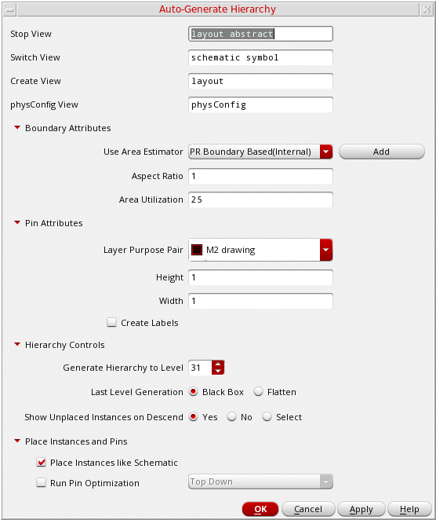

Generating a Hierarchy Automatically
The Auto-Generate Hierarchy command lets you define common boundary and pin parameters for the blocks you want to generate. You can specify the shape and size of the boundary that is created when the soft block is generated.
By default, layout view components are generated in the same library as the source schematic library. If the source library is the read-only mode, then the Auto-Generate Hierarchy command fails to generate layout views in the schematic library.
In such a scenario, use design_sch is mapped to a layout design library design_lay:
envSetVal("layoutXL" "schLayLibraryPair" 'string "((\"design_sch\" \"design_lay\")
In the following example, regular expressions are used to define mappings:
envSetVal("layoutXL" "schLayLibraryPair" 'string "((\"*_sch\" \"*_lay\") (\"*_sch2\" \"*_lay2\") (\"sch_*\" \"lay_*\") (\"lib1_*_sch2\" \"lib1_*_lay2\"))")
To generate a physical hierarchy automatically:
-
Select Floorplan – Auto Generate Hierarchy.
The Auto-Generate Hierarchy form appears.
 - In Stop View, specify the required physical view names to be used to determine the corresponding physical views.
- In Switch View, specify the names to be used to create a physical view for blocks if the stop views are absent in the hierarchy.
- In Create View, specify the name to be used for the new layout view, which will be created when no matching stop views are found.
- In physconfig View, specify the name of the physical configuration view that provides information about the schematic-layout pairs.
- Expand Boundary Attributes to display the options in this section. Select one of the Use Area Estimator options to calculate the boundary of area estimator functions.
- Click Add to register your own area estimation functions and use them.
-
In Aspect Ratio, set the width-to-length ratio of the boundary. The default value is
1, which specifies a square boundary. -
In Area Utilization, specify the percentage of area within the boundary that must be filled. The default is
25%. - Expand Pin Attributes to specify the following common settings for all the soft block pins and specify the pin width, height, and LPP in Width, Height, and Layer Purpose Pair fields.
- Select Create Labels to determine whether labels are to be generated along with the soft block pins.
- (Virtuoso Layout Suite EXL) Expand Hierarchy Controls to define settings for hierarchical instances.
-
Specify a value in Generate Hierarchy to Level to define the level up to which the hierarchy must be generated. The default (maximum) value is
31. - (Virtuoso Layout Suite EXL) Set Last Level Generation to Black Box or Flatten to specify the state in which the last level of hierarchy is to be generated.
- Set Show Unplaced Instances on Descend to Yes, No, or Select to specify whether unplaced instances are to be displayed when you descend into the hierarchy.
- (Virtuoso Layout Suite EXL) Expand Place Instances and Pins and select Place Instances like Schematic to place the generated soft block instances inside the PR boundary as in the corresponding schematic view. If not selected, the soft block instances are placed outside the PR boundary.
- (Virtuoso Layout Suite EXL) Select Run Pin Optimization to run Pin Optimizer hierarchically on the generated blocks. Select Top Down or Bottom Up mode to run Pin Optimizer.
- Click OK.
The generated layout is opened in a new window.
Related Topics
Registering and De-Registering Area Estimation Functions
Return to top